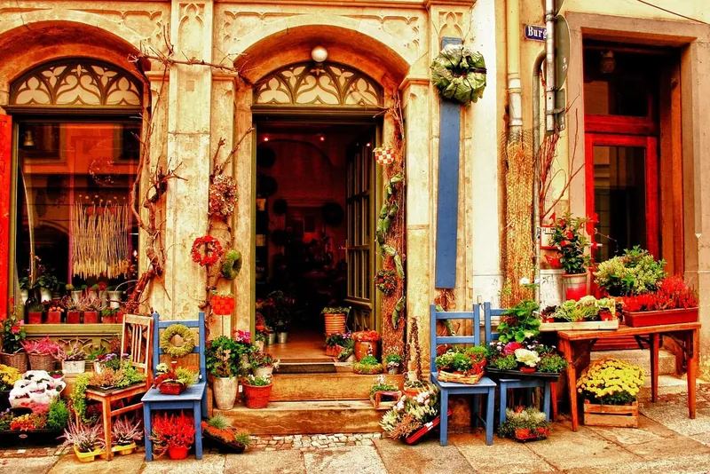
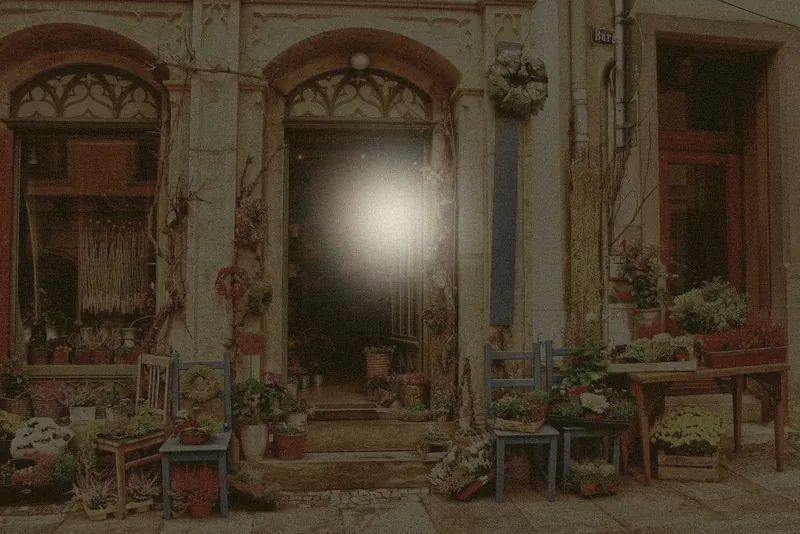
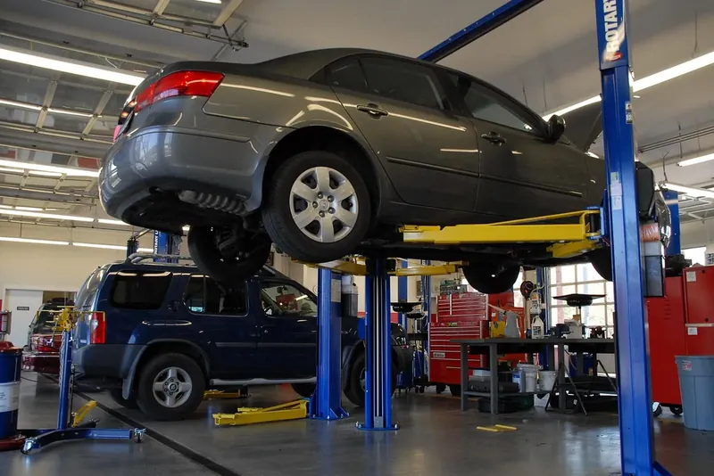
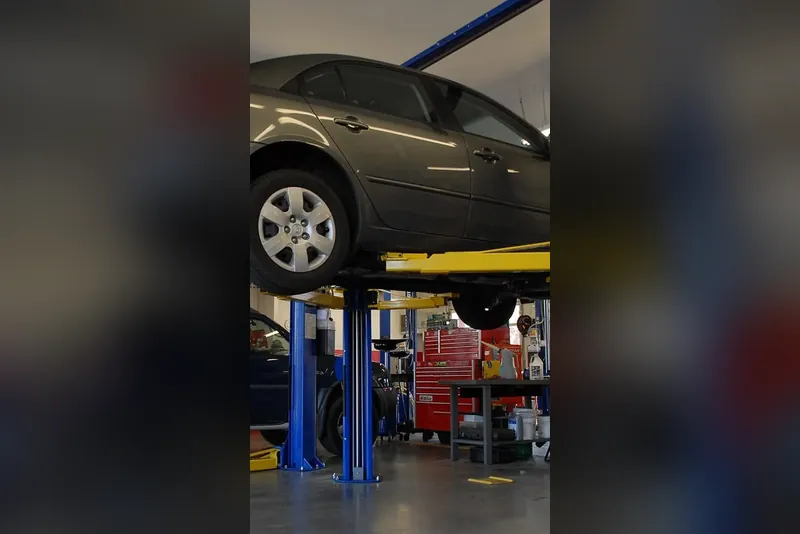
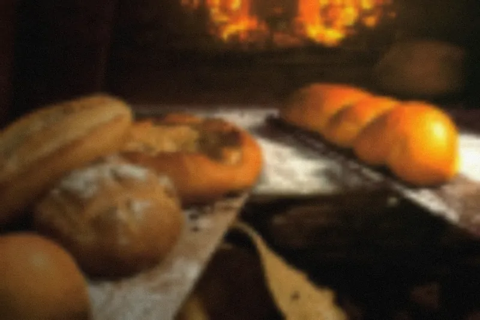
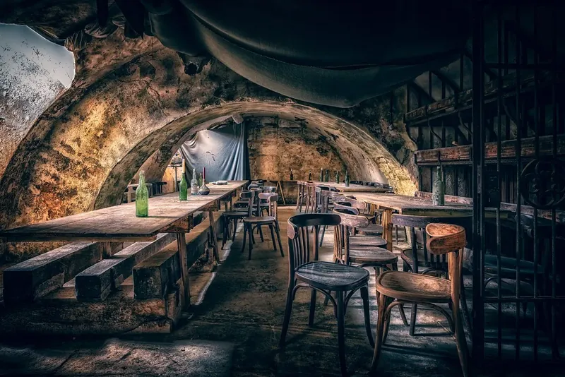
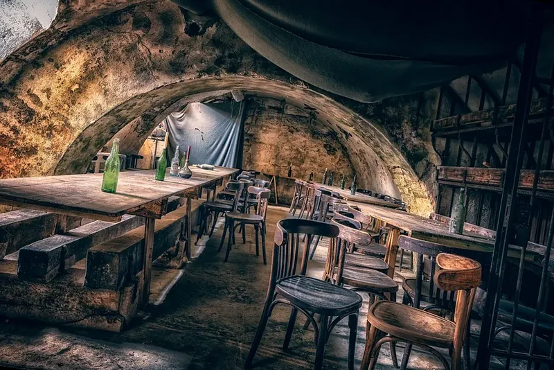
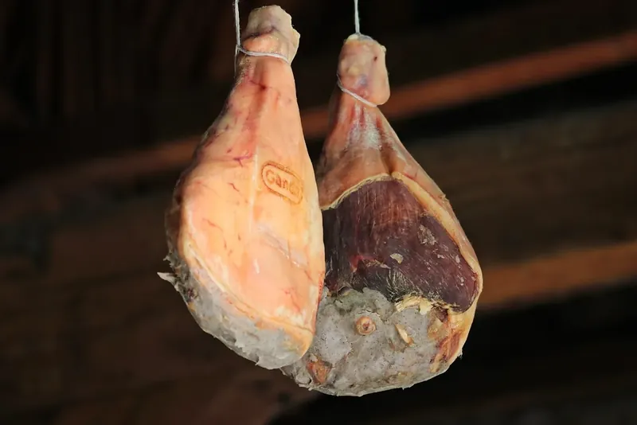
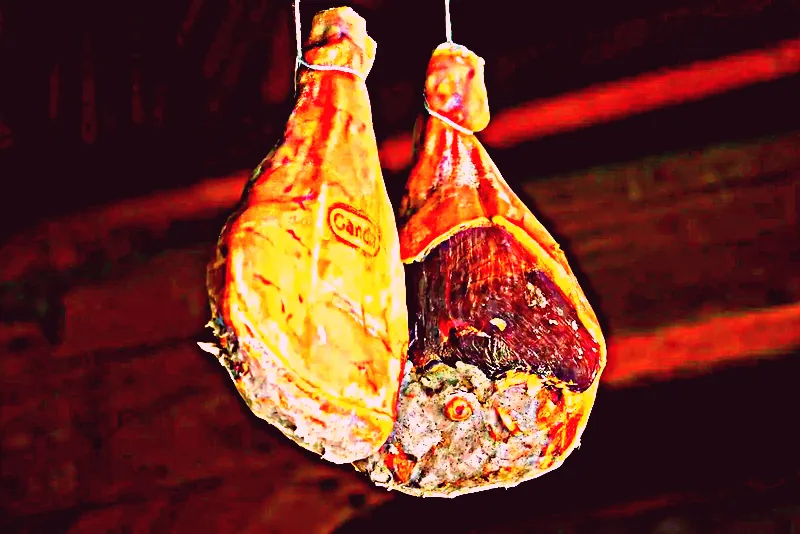

Photographier votre commerce
Votre téléphone suffit. Quinze bonnes photos de chez vous valent mieux que toutes les images de banque : ce sont elles qui font que votre site ne ressemble à aucun autre.
Les cinq règles
-
La lumière du jour, sans flash
Photographiez le matin ou en fin d'après-midi, portes et volets ouverts. Éteignez le flash : il écrase les couleurs et laisse une tache blanche sur les vitres. À l'intérieur, placez-vous dos à la fenêtre.

Oui lumière du jour 
Non le soir, au flash -
Le téléphone à l'horizontale
Un site s'affiche en largeur sur un ordinateur. Une photo prise en hauteur se fait couper ou laisse de grandes bandes vides. Gardez la hauteur pour les portraits et les détails.

Oui en largeur 
Non en hauteur, puis étirée -
Avancez plutôt que zoomer
Le zoom du téléphone abîme l'image. Faites deux pas vers le sujet. Montrez la matière : la croûte du pain, les mains au travail, le grain du bois, la vapeur du café.
Oui on s'approche 
Non on zoome de loin -
Bien droit
Activez la grille de l'appareil photo (Réglages, Appareil photo, Grille) et alignez un mur, une porte ou le bord d'un comptoir sur une ligne. Tenez le téléphone à hauteur de poitrine.

Oui les murs sont droits 
Non l'image penche -
Sans filtre
Pas de filtre Instagram ni de mode « beauté » : je règle les couleurs pour qu'elles aillent avec votre site. Envoyez la photo telle qu'elle sort du téléphone.

Oui couleurs naturelles 
Non filtre appliqué
Les photos à prendre
Choisissez votre métier : cochez au fur et à mesure, la liste reste sur votre téléphone. Prenez deux ou trois versions de chaque, je garderai la meilleure.
Les personnes sur les photos
Une main, un dos, une silhouette au travail rendent un lieu vivant. Si l'on reconnaît quelqu'un (vous, un employé, un client), il faut son accord écrit pour publier la photo : un simple message ou un papier signé suffit. Évitez les enfants.
Me les envoyer
- Gardez la qualité d'origine : sur WhatsApp, envoyez-les comme document, pas comme photo, sinon elles sont compressées.
- Ou bien déposez-les toutes d'un coup sur WeTransfer ou Google Drive et envoyez-moi le lien.
- Pas besoin de les trier ni de les renommer, je m'en occupe.
Par e-mail : contact@saitora.fr, en précisant le nom de votre commerce.
Pas le temps ou pas à l'aise ? Dites-le-moi : je peux venir les faire avec vous.